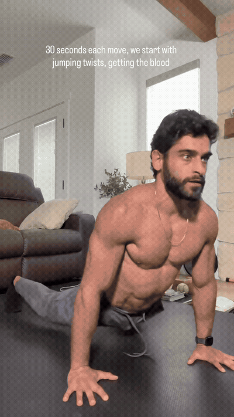
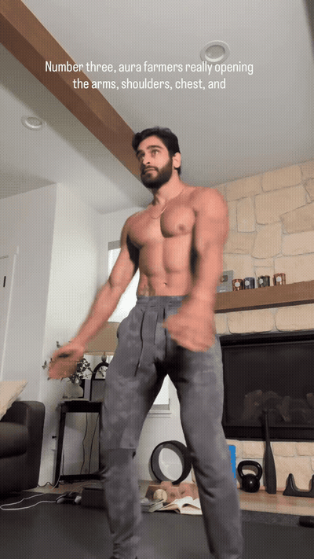
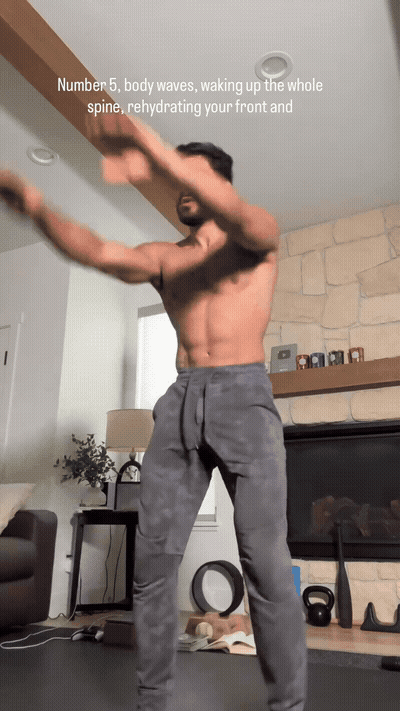
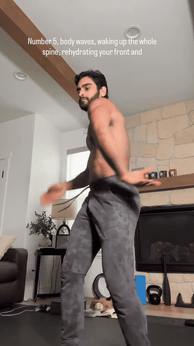
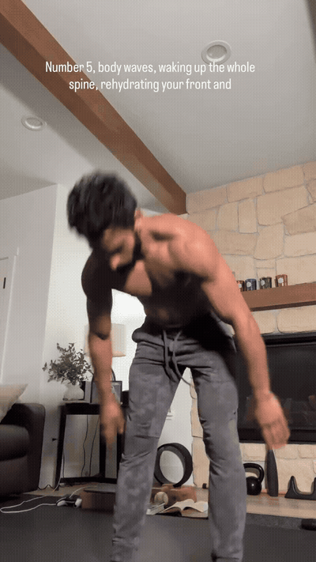
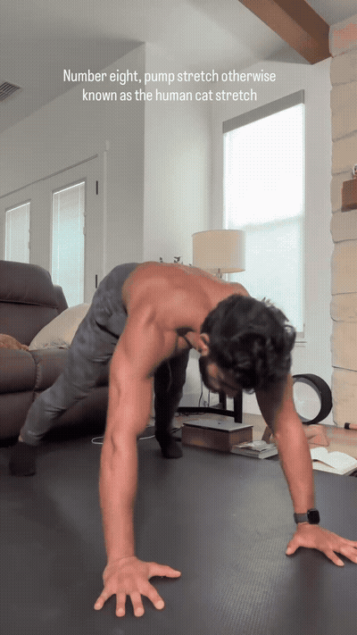
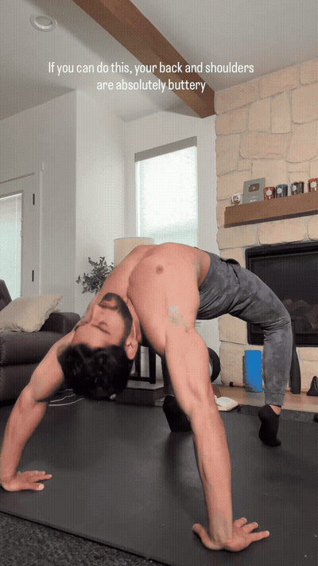
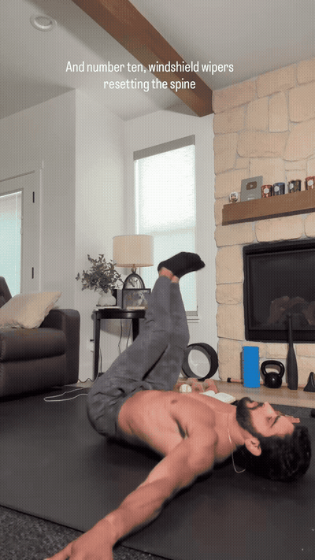
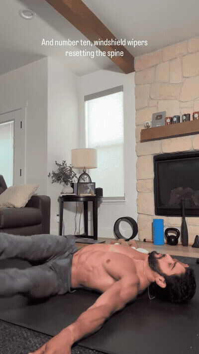

Use a light, rhythmic jumping twist to raise body temperature and introduce rotation. Keep the landing soft and reduce impact if needed.
Circle the arms through a full comfortable range to prepare the shoulders. Reverse direction rather than forcing the end range.

Sweep the arms to open the chest and rotate through the upper back. The transcript's “aura farmers” is an ASR error; the visual movement is a thoracic/chest opener.

Perform the creator's rotational McGregor-style warm-up swings to mobilize the shoulders and trunk. Keep the movement loose without throwing the joints.

Roll through the spine in a continuous body wave, moving segment by segment rather than collapsing into the low back.

Use the dynamic lunge pattern to open the hips while asking the legs, trunk, and balance system to coordinate.

Shift into a lateral deep squat while extending the opposite leg. Use a shallower range or hold support if the hips, ankles, or balance are not ready.

Flow between spinal extension and a rounded, folded position to move the spine through a comfortable range.

The reel demonstrates a bridge/wheel backbend for the back, shoulders, and front body. This is an advanced position, not a default beginner mobility drill.

From a supine position, let the knees move side to side to finish with gentle spinal rotation and decompression.